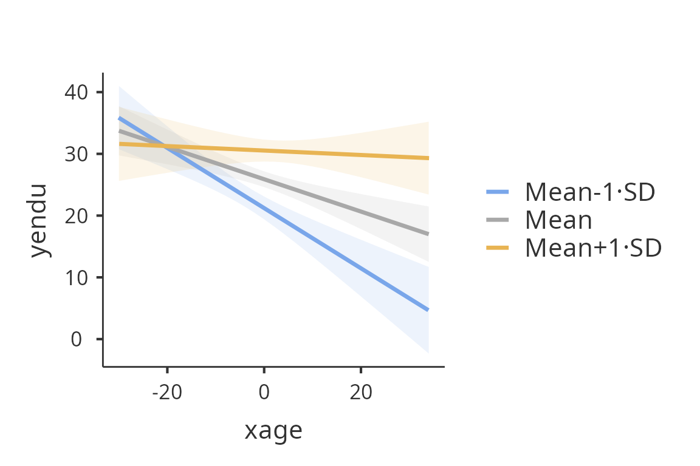

Examples of gamlj_lm()
Marcello Gallucci
2024-10-14
vignettes_gamlj_lm.Rmd
library(GAMLj3)Linear models in GAMLj
In this example we run a moderated regression analysis with simple slopes analysis and simple slopes graphs. Data are from Cohen et al 2003 and can be downloaded here.
The research design
The research is about physical endurance associated with age and
physical exercise. 245 participants were measured while jogging on a
treadmill. Endurance was measured in minutes (‘yendu’ in the file).
Participants’ age (xage in years) and number of years of
physical exercise (zexer in years) were recorded as
well
data<-read.csv("https://raw.githubusercontent.com/mcfanda/gamlj_docs/master/data/exercise.csv")
summary(data[,c("xage","zexer","yendu")]) xage zexer yendu
Min. :20.0 Min. : 0.0 Min. : 0.0
1st Qu.:43.0 1st Qu.: 7.0 1st Qu.:19.0
Median :48.0 Median :11.0 Median :27.0
Mean :49.2 Mean :10.7 Mean :26.5
3rd Qu.:56.0 3rd Qu.:14.0 3rd Qu.:33.0
Max. :82.0 Max. :26.0 Max. :55.0 The researcher is interested in studying the relationships between
endurance, age, and exercising, with the hypothesis that the effect of
age (expected to be negative) is moderated by exercise, such that the
more participants work out (higher levels of exer) the less
age negatively affects endurance.
Understanding the problem
We can think about this analytic problem as a multiple regression, where the effect of age and exercise can be estimated while keeping constant the other variable. However, the researcher puts forward a moderation hypothesis, because s/he expects the effect of age to change for different levels of exercising. We than need an interaction between age and exercise.
We first run a multiple regression (to warm up), then we estimate a multiple regression with an interaction (moderated regression) and we probe the interaction with a simple slope analysis and simple slope graphs. Technical details can be found in Cohen et al 2003, or in Preacher website.
Multiple regression
GAMLj gamlj_lm() function minimum setup only requires to
specify the formula of the model and the dataframe. The formula
interface is the same one used in lm() function.
mod1<-gamlj_lm(formula = yendu~xage+zexer, data=data)
mod1
GENERAL LINEAR MODEL
Model Info
─────────────────────────────────────────────────────────────────────
Info
─────────────────────────────────────────────────────────────────────
Model Type Linear Model OLS Model for continuous y
Model lm yendu ~ 1 + xage + zexer
Distribution Gaussian Normal distribution of residuals
Omnibus Tests F
Sample size 245
Converged yes
Y transform none
C.I. method Wald
─────────────────────────────────────────────────────────────────────
Note. All covariates are centered to the mean
MODEL RESULTS
Model Fit
────────────────────────────────────────────────────────
R² Adj. R² df df (res) F p
────────────────────────────────────────────────────────
0.166 0.159 2 242 24.1 < .001
────────────────────────────────────────────────────────
ANOVA Omnibus tests
──────────────────────────────────────────────────────────────
SS df F p η²p
──────────────────────────────────────────────────────────────
Model 4750.686 2 24.142 < .001 0.166
xage 1515.825 1 15.406 < .001 0.060
zexer 4298.311 1 43.687 < .001 0.153
Residuals 23810.334 242
Total 28561.020 244
──────────────────────────────────────────────────────────────
Parameter Estimates (Coefficients)
────────────────────────────────────────────────────────────────────────────────────────────────────────────
Names Effect Estimate SE Lower Upper β df t p
────────────────────────────────────────────────────────────────────────────────────────────────────────────
(Intercept) (Intercept) 26.531 0.634 25.282 27.779 -0.000 242 41.865 < .001
xage xage -0.257 0.066 -0.386 -0.128 -0.240 242 -3.925 < .001
zexer zexer 0.916 0.139 0.643 1.189 0.404 242 6.610 < .001
──────────────────────────────────────────────────────────────────────────────────────────────────────────── The object `mod’ is an R6 object which contains all the results tables and some additional function that can be used in subsequent analyses. Tables are pretty printed, but they can be modified or manipulated by transforming them in dataframes as follows:
anovaDF<-mod1$main$anova$asDF
anovaDF source ss df f p etaSqP
1 Model 4751 2 24.1 2.75e-10 0.1663
2 xage 1516 1 15.4 1.13e-04 0.0599
3 zexer 4298 1 43.7 2.44e-10 0.1529
4 Residuals 23810 242 NA NA NA
5 Total 28561 244 NA NA NAMore generally, the whole results object can be rendered in simple
tables with the command summary
summary(mod1)Model Info
info value specs
1 Model Type Linear Model OLS Model for continuous y
2 Model lm yendu ~ 1 + xage + zexer
3 Distribution Gaussian Normal distribution of residuals
4 Omnibus Tests F
5 Sample size 245
6 Converged yes
7 Y transform none
8 C.I. method Wald
Model Fit
r2 ar2 df1 df2 f p
1 0.166 0.159 2 242 24.1 2.75e-10
ANOVA Omnibus tests
source ss df f p etaSqP
1 Model 4751 2 24.1 2.75e-10 0.1663
2 xage 1516 1 15.4 1.13e-04 0.0599
3 zexer 4298 1 43.7 2.44e-10 0.1529
4 Residuals 23810 242 NA NA NA
5 Total 28561 244 NA NA NA
Parameter Estimates (Coefficients)
source label estimate se est.ci.lower est.ci.upper beta
1 (Intercept) (Intercept) 26.531 0.6337 25.282 27.779 -1.49e-16
2 xage xage -0.257 0.0655 -0.386 -0.128 -2.40e-01
3 zexer zexer 0.916 0.1386 0.643 1.189 4.04e-01
df test p
1 242 41.87 7.83e-113
2 242 -3.93 1.13e-04
3 242 6.61 2.44e-10summary() return a list of data.frame, one for each
table, that can be further manipulated or modified.
Results
Results show three tables. The Model Info table contains
information about the overall model. The ANOVA omnibus tests
table contains the results of the car:Anova() function,
with the addition of the partial
index for each effect and the inferential test for the whole model. The
Parameter Estimates table contains the summary()
results. For each coefficient the confidence interval is also
reported.
A special note should be made for the intercept. The intercept is the
expected value (the mean) of the dependent variable, estimated for all
independent variables equal to their means. This is because in
gamlj_lm(), continuous variables are centered to their mean
by default. In case one wants the independent variables not to be
centered, one can select a different scaling with the option
scaling.
Additional effect size indexes can be asked with the option
effectSize.
mod2$main$anova
ANOVA Omnibus tests
────────────────────────────────────────────────────────────────────────
SS df F p η² η²p
────────────────────────────────────────────────────────────────────────
Model 4750.686 2 24.142 < .001 0.1663 0.166
xage 1515.825 1 15.406 < .001 0.0531 0.060
zexer 4298.311 1 43.687 < .001 0.1505 0.153
Residuals 23810.334 242
Total 28561.020 244
──────────────────────────────────────────────────────────────────────── The same analysis can be done by updating the model with the
update() function. Almost all the options available in
gamlj_lm() can be added to a model by running
update(mod,...) where ... is any option or
options accepted by gamlj_lm().
mod2_2$main$anova
ANOVA Omnibus tests
──────────────────────────────────────────────────────────────────────────────────────────
SS df F p η² η²p ω² ε²
──────────────────────────────────────────────────────────────────────────────────────────
Model 4750.686 2 24.142 < .001 0.1663 0.166 0.159 0.159
xage 1515.825 1 15.406 < .001 0.0531 0.060 0.049 0.050
zexer 4298.311 1 43.687 < .001 0.1505 0.153 0.147 0.147
Residuals 23810.334 242
Total 28561.020 244
────────────────────────────────────────────────────────────────────────────────────────── Moderated regression
To include the interaction we simply add the interaction effect in the formula.
mod3$main$anova
ANOVA Omnibus tests
─────────────────────────────────────────────────────────────────────────
SS df F p η² η²p
─────────────────────────────────────────────────────────────────────────
Model 5887.234 3 20.858 < .001 0.2061 0.206
xage 1569.837 1 16.686 < .001 0.0550 0.065
zexer 4775.348 1 50.757 < .001 0.1672 0.174
xage:zexer 1136.548 1 12.080 < .001 0.0398 0.048
Residuals 22673.786 241
Total 28561.020 244
───────────────────────────────────────────────────────────────────────── Results
Because variables are centered to their means, the first-order coefficients can be interpreted as “average” effects. One can also report the betas (). The estimates of the betas are correct also in the presence of the interaction, because the variables are standardized before the interaction term is computed.
Simple Slopes
We can now probe the interaction. One can re-run the model adding the
appropriate options to ask for simple effects or one can use the
gamlj_simpleffects() function, which is a convenience
function to add simple effects to a pre-existing model. The function
gamlj_simpleffects(), however, only returns the simple
effects tables, not the full model.
mod3b<-gamlj_lm(formula = yendu~xage*zexer,
data=data,
simple_x = "xage",
simple_mods = "zexer")
mod3b$simpleEffects
SIMPLE EFFECTS
ANOVA for Simple Effects of xage
──────────────────────────────────────────────────────────────
zexer F Num df Den df p η²p
──────────────────────────────────────────────────────────────
Mean-1·SD 27.972 1 241 < .001 0.104
Mean 16.686 1 241 < .001 0.065
Mean+1·SD 0.160 1 241 0.690 0.001
──────────────────────────────────────────────────────────────
Parameter Estimates for simple effects of xage
─────────────────────────────────────────────────────────────────────────────────────────────────────
zexer Effect Estimate SE Lower Upper β df t p
─────────────────────────────────────────────────────────────────────────────────────────────────────
Mean-1·SD xage -0.487 0.092 -0.669 -0.306 -0.455 241 -5.289 < .001
Mean xage -0.262 0.064 -0.388 -0.135 -0.244 241 -4.085 < .001
Mean+1·SD xage -0.036 0.090 -0.214 0.142 -0.034 241 -0.400 0.690
───────────────────────────────────────────────────────────────────────────────────────────────────── Equivalently, we can do use the command
simple_effects():
se<-simple_effects(mod3,simple_x = "xage",simple_mods = "zexer")
se
SIMPLE EFFECTS
ANOVA for Simple Effects of xage
─────────────────────────────────────────────────────────────────────────
zexer F Num df Den df p η² η²p
─────────────────────────────────────────────────────────────────────────
Mean-1·SD 27.972 1 241 < .001 0.0921 0.104
Mean 16.686 1 241 < .001 0.0550 0.065
Mean+1·SD 0.160 1 241 0.690 5.27e-4 0.001
─────────────────────────────────────────────────────────────────────────
Parameter Estimates for simple effects of xage
─────────────────────────────────────────────────────────────────────────────────────────────────────
zexer Effect Estimate SE Lower Upper β df t p
─────────────────────────────────────────────────────────────────────────────────────────────────────
Mean-1·SD xage -0.487 0.092 -0.669 -0.306 -0.455 241 -5.289 < .001
Mean xage -0.262 0.064 -0.388 -0.135 -0.244 241 -4.085 < .001
Mean+1·SD xage -0.036 0.090 -0.214 0.142 -0.034 241 -0.400 0.690
───────────────────────────────────────────────────────────────────────────────────────────────────── In this way we obtain the effect of age computed for high exercise
(zexer centered to 1 SD above average), the main effect of
age (zexer centered to its mean) and the effect of age
computed for low exercise (zexer centered to -1 SD above
average). gamlGLM() produces both the F-tests and the
parameter estimates for the simple slopes. We focus on the latter table
now.
One can change the conditioning levels of the moderators with the
covs_conditioning option (default is mean_sd
for mean plus/minus one SD), either added to the gamlj_lm()
function or to the simple_effects() function. If one wants
to use the percentiles (25%,50%,75%), for instance, one can run the
following.
se<-simple_effects(mod3,simple_x = "xage",simple_mods = "zexer",covs_conditioning="percent")
se
SIMPLE EFFECTS
ANOVA for Simple Effects of xage
─────────────────────────────────────────────────────────────────────
zexer F Num df Den df p η² η²p
─────────────────────────────────────────────────────────────────────
50-25% 28.15 1 241 < .001 0.09273 0.105
50% 14.74 1 241 < .001 0.04857 0.058
50+25% 1.81 1 241 0.180 0.00597 0.007
─────────────────────────────────────────────────────────────────────
Parameter Estimates for simple effects of xage
──────────────────────────────────────────────────────────────────────────────────────────────────
zexer Effect Estimate SE Lower Upper β df t p
──────────────────────────────────────────────────────────────────────────────────────────────────
50-25% xage -0.435 0.082 -0.597 -0.274 -0.407 241 -5.306 < .001
50% xage -0.246 0.064 -0.373 -0.120 -0.230 241 -3.840 < .001
50+25% xage -0.105 0.078 -0.257 0.048 -0.098 241 -1.346 0.180
────────────────────────────────────────────────────────────────────────────────────────────────── The simple effects are now changed, because they are estimated for a different set of values of the moderator.
One can further tweak the appearance of the tables by selecting a
different value/labels in covs_scale_labels option. Options
are “labels”, “values” and “values_labels”. The latter outputs the
values and the labels of the conditioning values.
se<-simple_effects(mod3,simple_x = "xage",simple_mods = "zexer",covs_conditioning="percent",covs_scale_labels="values_labels")
se
SIMPLE EFFECTS
ANOVA for Simple Effects of xage
────────────────────────────────────────────────────────────────────────────
zexer F Num df Den df p η² η²p
────────────────────────────────────────────────────────────────────────────
50-25%=-3.673 28.15 1 241 < .001 0.09273 0.105
50%=0.327 14.74 1 241 < .001 0.04857 0.058
50+25%=3.327 1.81 1 241 0.180 0.00597 0.007
────────────────────────────────────────────────────────────────────────────
Parameter Estimates for simple effects of xage
─────────────────────────────────────────────────────────────────────────────────────────────────────────
zexer Effect Estimate SE Lower Upper β df t p
─────────────────────────────────────────────────────────────────────────────────────────────────────────
50-25%=-3.673 xage -0.435 0.082 -0.597 -0.274 -0.407 241 -5.306 < .001
50%=0.327 xage -0.246 0.064 -0.373 -0.120 -0.230 241 -3.840 < .001
50+25%=3.327 xage -0.105 0.078 -0.257 0.048 -0.098 241 -1.346 0.180
───────────────────────────────────────────────────────────────────────────────────────────────────────── Simple Slopes Plot
We can get a clear picture of the interaction by asking for a plot. Also the plot module takes care of centering the variables in a way that makes the plot clearly understandable.
The options needed in gamlj_lm() are plot_x
for the x-axis variable and plot_z for the moderator. At
which three levels of the moderator the separate lines are computed is
decided by the option simpleScale as for the simple
effects.
mod4<-gamlj_lm(formula = yendu~xage*zexer, data=data,
plot_x = "xage",plot_z= "zexer")
mod4
plot(mod4)
We use theplot() function. The function, applied to a
gamlj results object, returns one plot if it is present in
the model, returned as a ggplot2 object. If more than one plot is
present, a list of plots is returned. FALSE is returned if no plot is
present or defined. The function plot() can also be use to
add new plots or to add options to the plots.
For instance, if we want to give a more honest account of the model
fit, we can visualize the simple slopes over the the actual data. The
function plot() produces a new plot after adding any
options accepted by gamlj_lm()
plot(mod4,plot_raw=T)
Any plot produced by gamlj_lm or plot() can
be obtained as a ggplot2 object for further manipulations or usage. For
instance, one can change the theme of the plot:
myplot<-plot(mod4)
myplot+ggplot2::theme_grey()